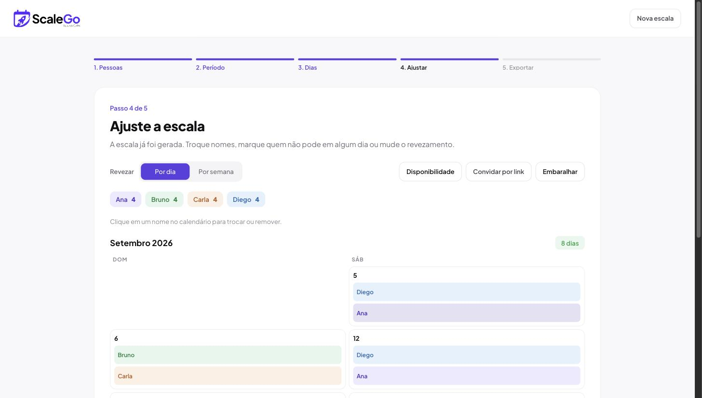
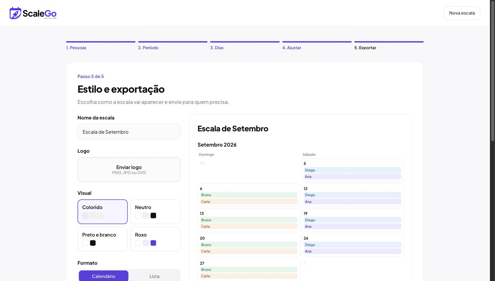

Cadastra as pessoas, escolhe os dias, e o ScaleGo monta o revezamento sozinho — de forma justa. Ajusta na mão o que precisar, e exporta pra WhatsApp, PDF ou planilha.
Sem cartão de crédito. Sem instalar nada. Seus dados ficam só no seu navegador.
Sem tutorial, sem configuração complicada.
O ScaleGo distribui os dias equilibrando quem já trabalhou mais e há mais tempo. Não gostou de algum dia? Clica no nome e troca na hora — a mudança fica marcada, sem bagunçar o resto.


Cada pessoa abre um link, marca as datas específicas que não pode, e manda outro link de volta — sem app, sem cadastro.
Colorido, neutro, preto e branco ou roxo — escolhe o visual que combina com a ocasião.
Sobe o logo do seu time e escreve um aviso pra quem for ver a escala.
WhatsApp com o texto pronto, PDF pra imprimir, ou planilha CSV pra abrir no Excel.
Veja a escala em grade de calendário ou como uma lista simples, dia a dia.
Sem conta, sem login, sem banco de dados. Tudo salvo localmente, do seu jeito.
Não. O ScaleGo é 100% grátis e não pede conta nem cartão. É só abrir e usar.
Só no seu navegador (localStorage), no seu computador. Não existe servidor guardando nada — nem nós temos acesso.
O link carrega os dados da escala codificados nele mesmo. A pessoa marca os dias que não pode e gera outro link, que ela te manda de volta pra você importar — tudo sem backend.
Como fica salvo só localmente, sim — por isso vale exportar em PDF ou planilha quando terminar de ajustar.
Leva menos de 2 minutos pra montar a primeira versão.
Criar minha escala grátis →